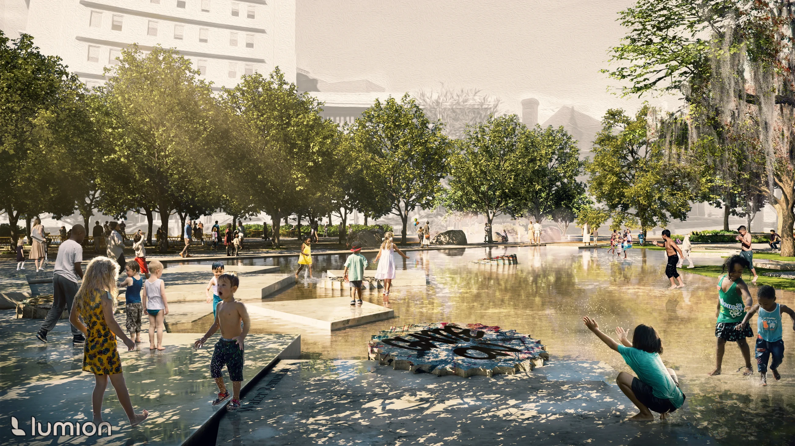
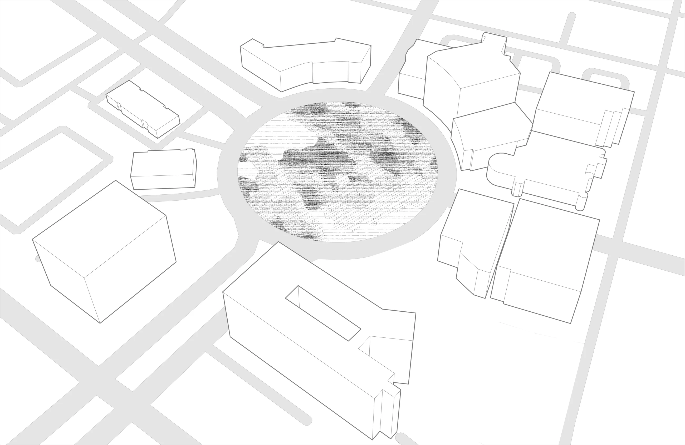
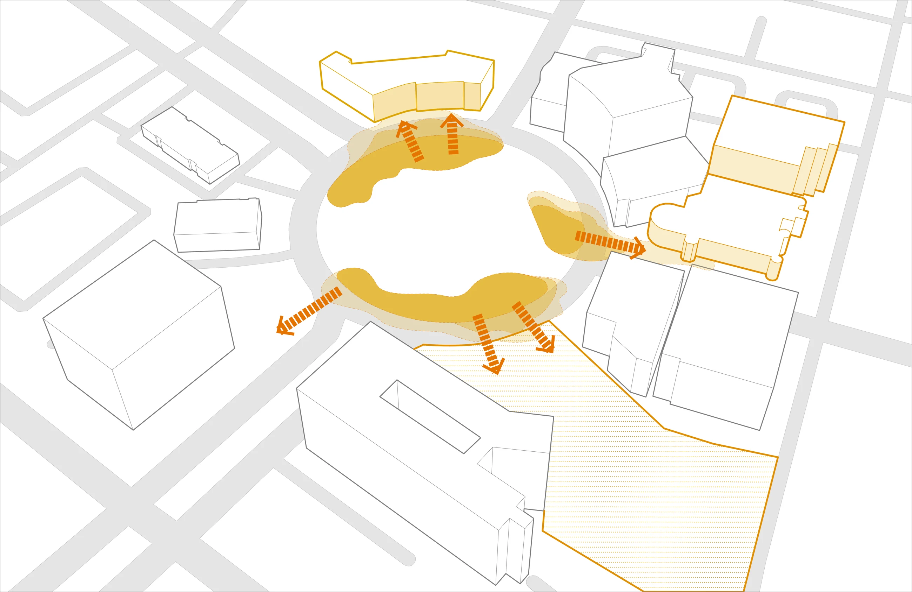
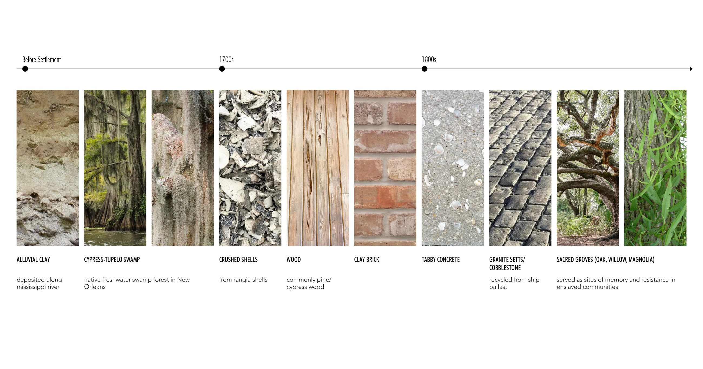
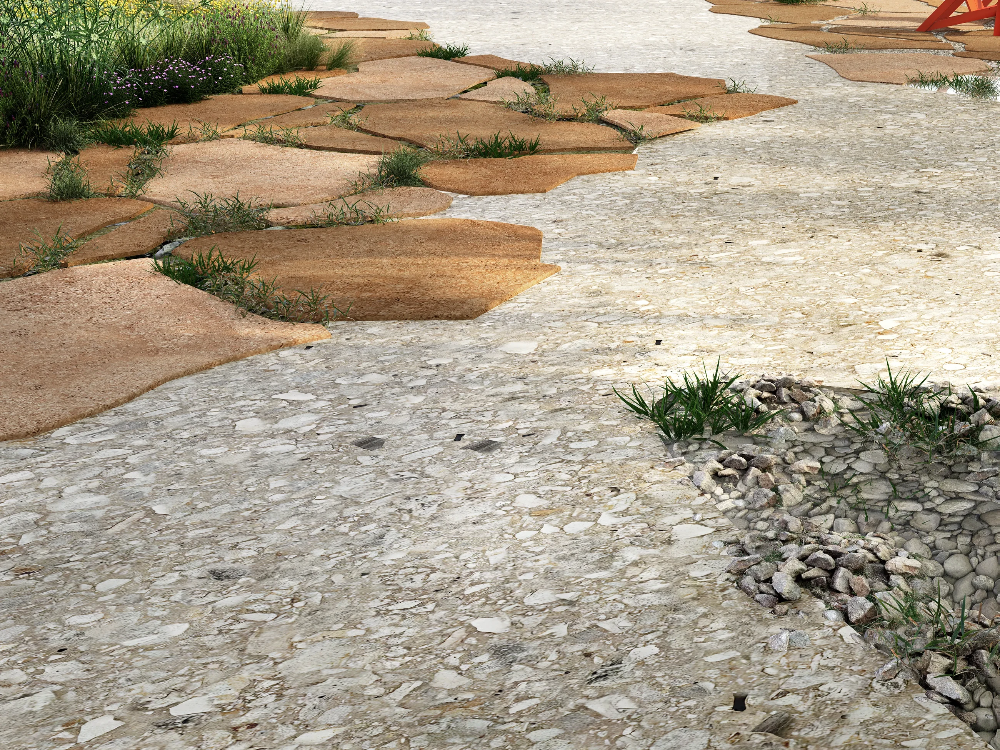
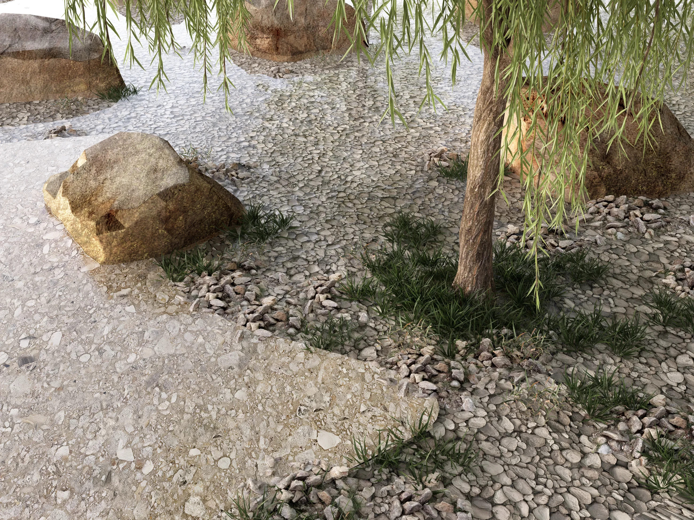

- Location
- Harmony Circle, New Orleans, Louisiana, United States
- Year
- 2025
- Type
- Landscape competition proposal
- Design team
- Jiewen Hu, Zicheng (Kai) Zhao, Kwan Yu (Lilian) Chung

From Separation to Ambiguity
A proposal for Harmony Circle in New Orleans that brings layered cultural memories into dialogue through monument fragments, tactile materials, and shifting gradients of wetness.
Project details
Project statement
New Orleans and the Mississippi River exist in a state of perpetual liminality—neither fully land nor water, neither defined by a single culture or race. But over time, levees rose, drawing harder lines between water and land. Social and environmental divides converged, pushing many underserved communities into the city’s most flood-prone areas. What was once fluid—ecologically and socially—began to harden into separation. The site, located at the threshold between racially diverse neighborhoods, was once envisioned as a civic common. Over time, it became a stage for political symbolism, reinforcing a singular and exclusionary narrative.
This project proposes a shift—from separation to ambiguity. Socially, it does not seek resolution through a single narrative of unity but instead holds space for tension to be seen and shared. The design creates a platform for multiple stories to coexist, using materials with distinct cultural references to reflect the layered identities of New Orleans. Fragments of the removed monument are redistributed—not as objects of reverence, but as participatory surfaces for community expression, as reflections of evolving social temperament. As James Baldwin reminds us, “Not everything that is faced can be changed. But nothing can be changed until it is faced.” Our proposal invites multiplicity, dialogue and confrontation.
Environmentally, the project treats land and water not as opposites, but as varying degrees of wetness. Subtle topographic modulation allows the site to hold water during rain and release it during dry periods. Materials are chosen for their capacity to absorb, retain, or repel moisture, creating gradients of wet and dry that shift with the weather. Rather than a hard edge, the threshold between land and water is felt bodily—through pooled water, filtered mist, and softened ground. Visitors encounter the site through the skin, through atmospheric change. Amid heat, water connects across age, race, and background with moments of shared bodily relief.
By revealing tension rather than erasing it, the site becomes a space where information is exchanged, contradictions emerge, and meanings are continually deposited. Here, ambiguity becomes the medium through which memory, climate, and culture coalesce—unfinished, alive, and open to encounter.


Drawings and images












